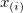
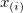
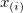

に対して、 と は、それぞれ点  における標本の累積分布関数および理論的な累積分布関数を表すものとし、 はi 番目に小さい標本データであり、コルモゴロフ－スミルノフ検定は、帰無仮説
に対して、 と は、それぞれ点  における標本の累積分布関数および理論的な累積分布関数を表すものとし、 はi 番目に小さい標本データであり、コルモゴロフ－スミルノフ検定は、帰無仮説  の検定を行います。これは、ユーザが指定した理論分布からランダムに採られた標本であるかどうかを検定します。現在、Originでは、正規性のみを検定します。
の検定を行います。これは、ユーザが指定した理論分布からランダムに採られた標本であるかどうかを検定します。現在、Originでは、正規性のみを検定します。
内容 |
標準化のために、1標本のKolmogorov-Smirnov検定を実行します
kstest irng:=col(2)
| 表示 名 |
変数 名 |
I/O と データ型 |
デフォルト 値 |
説明 |
|---|---|---|---|---|
| 入力 | irng |
入力 Range |
|
入力データ範囲を指定します。 |
| 統計 | stat |
出力 double |
|
正規分布の平均を指定します。値が<auto>の場合、Originが自動で計算します。 |
| 分散 | df |
出力 double |
|
正規分布の分散を指定します。値が<auto>の場合、Originが自動で計算します。 |
| 統計 | prob |
出力 double |
|
検定の統計量Dを計算します。 |
この関数は、標本がユーザが指定した理論分布の母集団から採られたものかどうかを決めるため、標本の累積分布関数と理論的な累積分布関数の最大の距離を比較するコルモゴロフ－スミルノフ検定を行います。現在、Originでは、正規性のみを検定します。
1.列を選択して右クリックし、列の一律設定：正規乱数 を選択して、列にデータを入力します。
2.コマンドウィンドウでkstest を入力します。帰無仮説の確率は、kstest.prob で表示されます。
与えられた標本データ に対して、 と は、それぞれ点  における標本の累積分布関数および理論的な累積分布関数を表すものとし、 はi 番目に小さい標本データであり、コルモゴロフ－スミルノフ検定は、帰無仮説 の検定を行います。これは、ユーザが指定した理論分布からランダムに採られた標本であるかどうかを検定します。現在、Originでは、正規性のみを検定します。
と の差を求めるため、K-S検定は2つの累積分布関数間の差の最大の絶対値を計算します。
そして、D は、帰無仮説の確率を計算するのに使用されます。
Originは、この統計量を計算するのに、NAG関数nag_1_sample_ks_test (g08cbc) を呼び出します。アルゴリズムについての詳細は、関連のNAG文書を参照して下さい。
William H. Press, etc. 2002.Numerical Recipes in C++.Cambridge University Press.